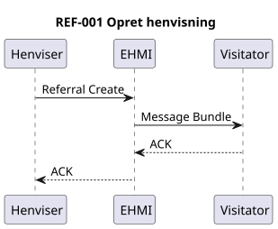
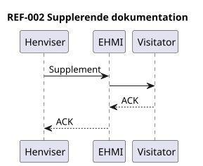
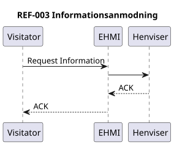
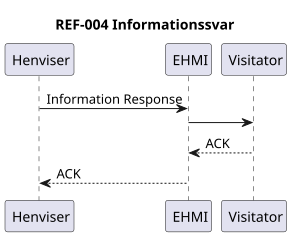
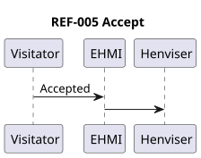
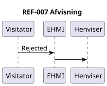
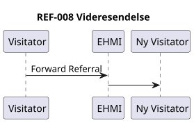
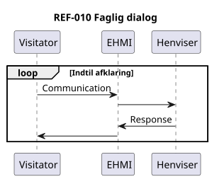
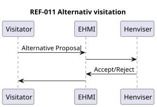
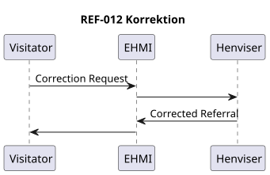

DK MEDCOM REFERRAL LM
0.1.0 - draft

DK MEDCOM REFERRAL LM
0.1.0 - draft

DK MEDCOM REFERRAL LM - Local Development build (v0.1.0) built by the FHIR (HL7® FHIR® Standard) Build Tools. See the Directory of published versions
Dette dokument beskriver en FHIR Messaging-baseret model for henvisningshåndtering.

Beskrivelse
Henviser -> EHMI : REF-001 EHMI -> Visitator

Beskrivelse
Henviser -> EHMI : REF-002 EHMI -> Visitator

Beskrivelse
Visitator -> EHMI : REF-003 EHMI -> Henviser

Beskrivelse
Henviser -> EHMI : REF-004 EHMI -> Visitator
Accept af henvisning

Beskrivelse
Visitator -> EHMI : REF-005 EHMI -> Henviser
Booking gennemført
Beskrivelse
Visitator -> EHMI : REF-006 EHMI -> Henviser

Beskrivelse
Visitator -> EHMI : REF-007 EHMI -> Henviser

Beskrivelse
Visitator -> EHMI : REF-008 EHMI -> Ny Visitator
Beskrivelse
Visitator -> EHMI : REF-009 EHMI -> Henviser

Beskrivelse
Visitator <-> Henviser via EHMI

Beskrivelse
Visitator <-> Henviser via EHMI

Beskrivelse
Visitator -> Henviser -> Visitator via EHMI